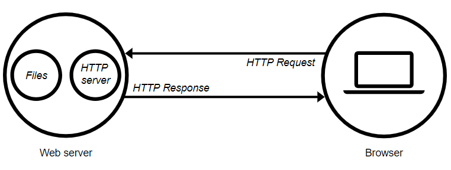

Provider:
Società che fornisce servizi IT di Data Center e connettività a clienti terzi.
Dominio:
Per nome di dominio si intende l’etichetta di testo assegnata ad un indirizzo numerico utilizzato nei protocolli internet (IP) che permette di identificare più facilmente una determinata risorsa.
Housing, Hosting ed In House:
Ogni sito visitabile si trova su un server web e tramite esso viene reso disponibile al browser.L'attivazione dei servizi di rete Internet può avvenire sostanzialmente in tre metodi differenti:
- Web Housing
- Web Hosting
- In House
Web Housing:
Il web housing prevede che l’azienda sia proprietaria della macchina fisica e del relativo/i web server. In questo caso il provider dei servizi fornisce lo spazio fisico dove risiede il Server e la relativa connettività. La gestione del Server è quindi demandata in remoto all’azienda.
Web Hosting:
Il web hosting prevede l’occupazione di uno spazio virtuale su una macchina fisica di proprietà di un provider. Questa soluzione è scelta da diverse compagnie perché ha costi di gestione più bassi rispetto alla precedente soluzione anche se permette meno elasticità di gestione.
In House:
Il metodo “In House” prevede che il server sia fisicamente collocato all’interno della rete locale dell’azienda. Questo metodo è poco utilizzato in quanto molto pericoloso perchè in caso di danni alla rete aziendale ne andrebbe a discapito anche la disponibilità del Web Server.
Web Server:
Per web server si intende un'applicazione software, eseguita su una macchina -server- che sia in grado di gestire le richieste effettuate da un browser web.
Protocolli:
Un web server si serve del protocollo http o https per elaborare le richieste ed è in grado di gestire pagine o applicativi sia statici che dinamici.
HTTPS (HyperText Transfer Protocol over Secure Socket Layer) è un protocollo nato nel 1994 che offre comunicazioni sicure tramite SSL (Secure Sockets Layer) sostituito poi da TLS (Transport Layer Security).
Si differenzia dal protocollo HTTP per quanto riguarda la Cifratura del traffico (Http invia tutte le comunicazioni “in chiaro” mentre HTTPS crea un canale di comunicazione criptato) ed Autenticazione, attraverso lo scambio di certificati in modo da garantire l’identità delle parti e la loro riservatezza.
DNS:
E’ un servizio distribuito globale che traduce il nome del sito web in un indirizzo IP numerico che identifica un determinato server. Il DNS funziona analogamente ad una rubrica telefonica, perché gestisce il raccordo tra nomi e numeri. I server DNS possono essere configurati come resolver o forwarder.
Resolver:
è in grado di risolvere in autonomia l’indirizzo, ovvero senza appoggiarsi ad altri DNS server ma solo a Name server terzi. Generalmente tutti i DNS server pubblici vengono impostati come Resolver.
Forwarder:
a meno che quest’ultimo non abbia già l’indirizzo nella propria cache per risolvere il nome di un sito necessita di un altro DNS server.
Socket:
socket è la coppia costituita da IP + Porta, in grado di identificare un processo su una qualsiasi macchina. L’indirizzo IP indicherà la macchina mentre la porta il dato processo.
Transport ports:
I range delle porte sono:
-
0 → 1023 well known ports
- 80 HTTP
- 443 HTTPS
- 1024 → 49151 registered ports
- 49152 → 216-1 dynamic ports